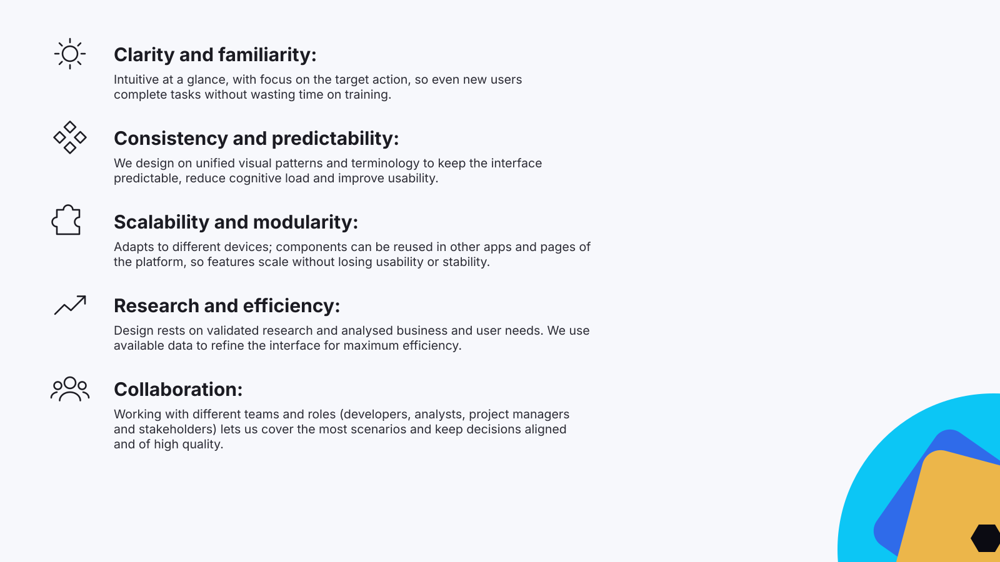
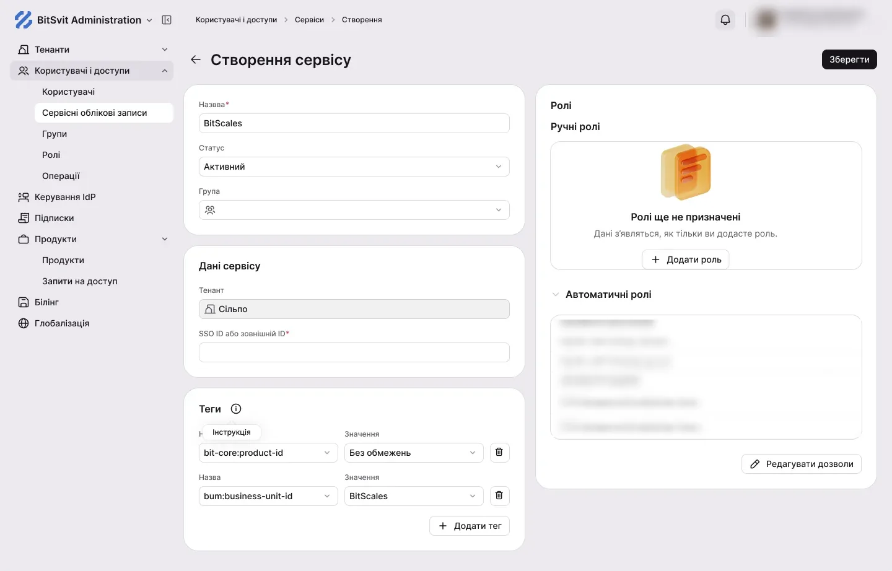

BitSvit Platform — one portal for all of a group’s business apps.
BitSvit brings the business apps of Fozzy Group into one web portal that works on desktop, tablet and phone. I own its design system and design platform and access-management screens together with a second designer — from principles and requirements to reviews of the shipped React code.

The business problem: dozens of tools, one way in.
TemaBit is the IT company of Fozzy Group and builds most of the holding’s software. For years employees worked in a desktop client, where a typical user had about 26 separate products. BitSvit replaces it with an API-first web platform: one sign-in, one home screen, one navigation model — on any device, including personal ones.
Several companies of the group use the platform as separate tenants with isolated data. The first product in production is BitCore IAM, which authorises users for every other product on the platform. Subscriptions, billing and further business apps are built on the same foundation by different product teams.

My role and how the team works.
I am the designer responsible for the design system: the Figma library, the React UI kit in Storybook and the rules for using them. I also design platform and access-management flows together with a second product designer. The team includes a product owner, a business analyst, a frontend tech lead with developers, and QA.
- Scrum rhythmSprints with planning, refinement, estimates in story points, demo and retrospective, plus a weekly design sync.
- Design before refinementDevelopers see the mockup before the task is refined, so estimates rest on the real solution and not on a guess.
- One place for approved designA marked section in Figma holds only the final, approved version. Every development ticket links to its design task.
- AI drafts need a designerPrototypes generated by AI move forward only after a design review.
In September 2024 I ran workshops where the design team agreed on five principles. They work as the tie-breaker in later decisions: when two solutions look equally good, the one that serves the principles wins.


Access management: roles, groups and tenants.
The business goal of BitCore IAM is to hand day-to-day access administration to the access-management department. These are not engineers, so the interface has to make a complex model clear: users, groups, tenants, roles that each product defines, and attribute-based rules on top of role-based ones.
- Bulk role assignmentA master-detail screen for assigning roles to many users or groups at once, with an explicit choice between adding to existing roles and replacing them — the costly mistake in this flow.
- Scale casesRole copying between users and group import, designed for a real case with more than 2,000 groups.
- A first version that did not workAfter an early demo the team admitted the permissions flow was inconvenient. We listed more than 30 issues and reworked it. I treat that demo as the cheapest test we ran.
- How decisions are validatedDesigns are reviewed with the access-management team and the frontend tech lead; the product owner collects feedback from current users. Before choosing a save pattern I compared how ten enterprise systems handle saving. Moderated usability tests with end users are the next step and have not been run yet.


Accessibility, languages and devices are requirements, not extras.
These three topics are written into the platform’s non-functional requirements, so every component and screen is designed against them.
- WCAG 2.1 AAThe requirement covers contrast of 4.5 : 1 for text and 3 : 1 for interface elements, full keyboard operation, and state that never depends on colour alone. The honest status: it is a target in progress. An internal review in October 2026 found gaps — missing alt texts, keyboard navigation in places, no automated tests — and accessibility became a separate work stream.
- My part in itA contrast analysis of ten status colours that replaced semi-transparent badge tokens with opaque ones (text contrast now holds at 5.9–7.5 : 1 on any row background) and flagged the badge edge against WCAG 1.4.11. A component review that caught a disabled link still reachable from the keyboard. A typography pass that moved 857 text layers from 10 px to 12 px.
- Two languagesUkrainian and English, with user settings for language, date format, money format and currency. Two rules follow from that: no button has a width fixed to one translation, and every text reaches a component through props, never hard-coded.
- Three device classesThe same functions from a 360 px phone and a 640 px tablet to a 1366 px desktop. Every platform page is designed at 1440 and at 375 px, and components were checked at 125% browser zoom.
A design system that stays in sync with React code.
The UI kit is a React and TypeScript library built on accessible primitives and documented in Storybook. My job is to make sure Figma and code describe the same thing — with tooling, not with manual checks.
- Token releasesThree token layers, published through a flow I agreed with the developers: Tokens Studio, a merge request, an automatic release of the kit.
- Code Connect550 links between Figma and code. A developer opens a component in Figma and sees its real React usage.
- Storybook → FigmaA mapping that resolves 617 of 628 story tags to real Figma variants, so a screen described in code can be rebuilt in Figma from library components.
- Reviews against the buildI compare each implemented component with its spec in the browser: computed styles, every state, keyboard behaviour. The Link review alone found 8 mismatches.

Documentation that people and AI agents can follow.
Components alone do not make screens consistent. I analysed 158 production screens and turned them into 32 patterns — page templates, filters, bulk actions, saving, notifications. Every rule carries a status: approved, default, hypothesis or open.
- Written next to the codeThe patterns live as Markdown beside Storybook, so designers, developers and AI coding agents read the same rules. Clickable prototypes are now assembled from real kit components and reviewed by design as a formal step.
- A decision log21 recorded decisions with context and trade-offs: a 12-column grid with 1024 / 1440 / 1920 breakpoints, filters in a drawer as the standard, a data-grid base font of 12 px with a 14 px option, accessibility as its own work stream.
Closing the gap between design and delivery.
I audited two years of design tasks against frontend tickets. A large share of finished design had never reached code — not because of quality, but because hand-off had no owner. The fix was process, not more components.
- A live readiness pageEvery component with its status in Figma, Storybook and production.
- A showcase48 component cards, each linked to its Storybook story and its Figma master, so nobody has to ask what exists.
- Design review inside deliveryA component or prototype moves forward only after a review against the real code.
I do not have adoption or speed metrics yet, and I would rather say so than invent them. What I can show is the system itself and the process around it.
Three lessons I’m carrying forward.
- Requirements firstAccessibility, languages and devices cost little when they are constraints from day one, and a lot when they arrive as fixes.
- Measure the hand-off, not the libraryThe number of components says little. The share of design that reaches production says a lot.
- Show unfinished work earlyThe demo that exposed an inconvenient permissions flow saved months of polishing the wrong thing.
If you liked this, also see…
Found this through Upwork?
Then you already know where to reach me. Send the brief through your Upwork job post or an invite — I usually reply within a working day.